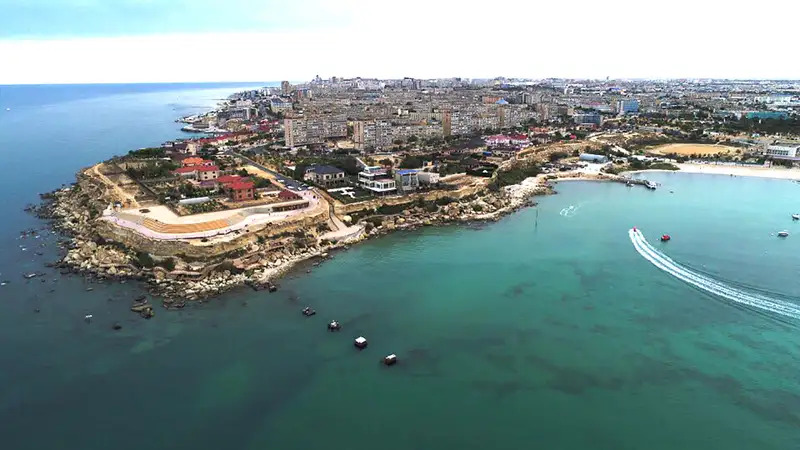
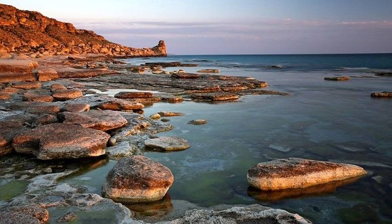
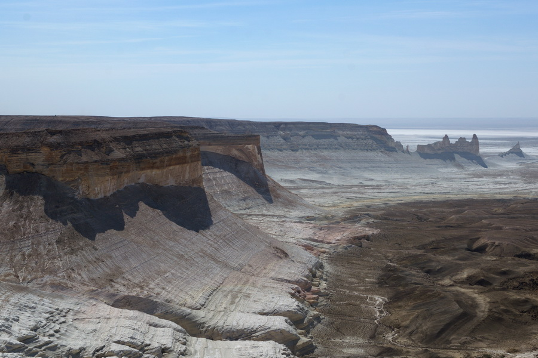

Актау
Каспийское побережье · скалы и просторы Мангистау
Побережье и пейзажи

Каспийское побережье
Актау стоит у восточного берега Каспия. Бирюзовая вода, бухты и длинная береговая линия создают особенный морской пейзаж посреди степи.

Скалистый берег
Причудливые каменные пласты и волны Каспия формируют суровый берег Мангистау. Здесь особенно красиво наблюдать за морем на закате.

Плато Устюрт
Просторные пустынные ландшафты и обрывистые уступы плато напоминают декорации другого мира. Это одно из самых впечатляющих направлений для поездки из Актау.
🌊 Море рядом
Городские набережные и пляжи выходят к Каспию — морской воздух здесь соседствует с засушливой степью.
🏜 Природа Мангистау
За пределами города встречаются плато, каньоны и необычные скальные формации.
🎒 На заметку
В регионе бывает жарко и ветрено: возьмите воду, защиту от солнца и удобную обувь для прогулок по камням.